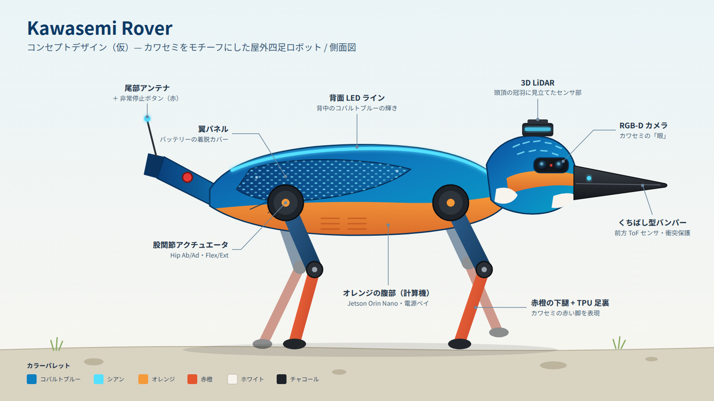

サブプロジェクト：作りながらハードウェアを学ぶ
Kawasemi Rover: Building an Outdoor Quadruped
to Learn Robot Hardware from the Ground Up
カワセミ・ローバー ― 屋外四足歩行ロボットを自作して、ハードウェアの仕組みを理解する
武藤 雅裕個人プロジェクト（計画・初期設計の段階）
ねらい
研究では既製のロボットを使うので、機構・モータ・電源・配線は「中身を知らない箱」になりがちである。12 自由度の四足ロボットを CAD 設計 → 3D プリント → 制御 → 屋外実験まで自分で作り、ハードウェアがどう動いているかを手で理解する。
1何を作るか
Stanford Pupper v3 の機構と制御を参考にした、屋外向けのオリジナル四足ロボット。芝生や砂利道を歩き、巡回・探索・環境認識ができることを目指す。Pupper v3 のコピーではなく、筐体・機構・ソフトウェアは自分で設計する。
| 項目 | 目標（初期案） |
|---|
| サイズ | 全長 35〜45 cm、幅 20〜25 cm、高さ 25〜35 cm |
| 重量 | 3〜5 kg |
| 自由度 | 12（1 脚 3 自由度 × 4 脚） |
| フレーム | 3D プリント（PETG 等）＋部分的な金属補強、足裏は TPU |
| 計算機 | Jetson Orin Nano ＋ STM32 / ESP32 |
| センサ | RGB-D カメラ、3D LiDAR、IMU、関節エンコーダ |
| ソフト | Ubuntu 22.04（JetPack 6）、ROS 2 Humble |
重量・寸法・関節トルク・電源容量は互いに影響するので、機構計算と実験の結果で決める。
2作りながら学ぶこと
機械設計Fusion で CAD、積層方向・応力集中・ねじ固定部
アクチュエータトルク・速度・重量・エンコーダの比較と選定
電源・配線バッテリー、BMS、ヒューズ、系統の分離、非常停止
運動学・動力学脚の順・逆運動学、必要トルクの推定
組込み・通信マイコンの関節制御、CAN など、ROS 2 との接続
屋外対応防塵・防滴、放熱、転倒時の衝撃、足裏のグリップ
3コンセプトデザイン

カワセミのコバルトブルーの背中、オレンジの腹部、黒く長いくちばし、赤い脚がモチーフ（仮）。頭頂に 3D LiDAR、目の位置に RGB-D カメラ、腹部に Jetson Orin Nano と電源、くちばしは前方のバンパー。寸法と機構は今後の設計で変わる。
4Pupper v3 との違い
| 項目 | Pupper v3 | Kawasemi Rover |
|---|
| 主目的 | 教育・研究用 | 屋外の探索・巡回 |
| 機械設計 | 公開設計 | Fusion で独自設計、屋外対応 |
| 計算機 | Raspberry Pi 系 | Jetson Orin Nano（VLA・SLAM を 1 台で） |
| センサ | 姿勢・関節 | ＋ 3D LiDAR、RGB-D |
| 制御 | 歩行・姿勢、RL 歩行 | ＋ 不整地適応、転倒回復、自律移動 |
5システム構成
速い制御はマイコン、重い推論は Jetson に分ける。モータ電源と計算機電源は系統を分け、電圧降下やノイズで計算機が落ちないようにする。
61 脚 3 自由度の設計
股関節の左右（Ab/Ad）・前後（Flex/Ext）と膝の 3 関節。まず 1 脚だけ作り、計算と実測を比べる。
p = f(q), ṗ = J(q) q̇
M(q)q̈ + C(q,q̇)q̇ + g(q) = τ + JcTfc
MATLAB で順・逆運動学、Simscape Multibody で必要トルク τ を推定し、アクチュエータの選定に使う。
7地形に合わせた寸法の最適化
平地・芝生・砂利・段差・斜面で、適した脚の長さや胴体の寸法は違う。CAD の詳細設計に入る前に、シミュレーションで寸法を決める。
参考：RoboGrammar（SIGGRAPH Asia 2020）。構成の探索まではせず、四足 12 自由度の構成は固定して寸法だけを最適化する。
| パラメータ | 効くところ |
|---|
| 大腿・下腿の長さ | 歩幅、段差、必要トルク |
| 股関節の配置 | 前後・左右の脚間隔 |
| 胴体・重心位置 | 安定性、斜面での姿勢 |
| 足先形状 | 接地面積、滑り |
| 関節の可動範囲 | 姿勢回復、転倒復帰 |
評価の流れ
- 寸法をパラメータにした URDF / MJCF を作る
- MuJoCo に平地・凹凸・溝・斜面・低摩擦面を用意する
- 候補ごとに歩行制御（MPC か RL）を最適化して評価する
- 速度・エネルギー・転倒率・関節トルクを比べる
- アクチュエータと 3D プリントの制約内で選ぶ
8屋外で試すこと
- 平坦地の歩行速度、芝生・砂利道での歩行
- 小さな段差の乗り越え、斜面での姿勢
- バッテリー持続時間、関節温度、転倒回数
初号機は乾いた平坦地と軽い凹凸が対象。泥地・雨天・急斜面は段階的に試す。
9ロードマップ
- Phase 1：1 脚の試作寸法の評価、Fusion で設計、IK・トルク推定、Python から関節を動かす→ 3 自由度のオリジナル脚
- Phase 2：四足の製作胴体・4 脚・バッテリー配置・IMU・ROS 2→ 12 自由度の四足ロボット
- Phase 3：RL 歩行URDF・MuJoCo、PPO で歩行を学習、Sim2Real→ RL で歩けるロボット
- Phase 4：屋外走破性足裏・筐体の改良、芝生・砂利・段差・斜面→ 屋外対応の四足ロボット
- Phase 5：自律移動RGB-D・LiDAR、SLAM、Nav2、屋外巡回
- Phase 6：VLA・Agentic AI自然言語での探索、世界モデル、失敗検知と回復
いまは計画・初期設計の段階。アクチュエータはまず 3 個だけ買って 1 脚を作り、性能を確かめてから 12 個に増やす。
10注意していること
- 安全から作る。関節の可動範囲とトルクの制限、非常停止、最初の実機試験は支持具に吊るして行う
- 費用。概算 20〜60 万円で、大半は関節アクチュエータ 12 個。1 脚で確かめてから増やす
- ライセンス。Pupper v3 の設計やコードを使うときは、リポジトリ・CAD・ファームウェアごとに確認する
本業の研究（視触覚の世界モデルによる失敗予測）とは別の、ハードウェアを学ぶためのサブプロジェクト。Phase 6 では、研究で扱う失敗検知と回復を四足ロボットでも試したい。
- Stanford Pupper v3 Documentation, pupper-v3-documentation.readthedocs.io
- A. Zhao et al., RoboGrammar, ACM TOG 39(6), SIGGRAPH Asia 2020.
- J. Xu et al., Multi-Objective Graph Heuristic Search for Terrestrial Robot Design, ICRA 2021.